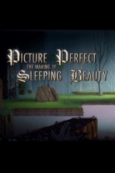

Picture Perfect: The Making of Sleeping Beauty (2008)



Country:United States, 43 minutes
Spoken languages:
Genres:Documentary
Director(s):
Writer(s):
Video Codec:Unknown
Number: 265
IMDb Rating:

Certification:
Storyline:
Artists, collaborators, and historians past and present reflect on the making of one of Walt Disney's masterpieces, and how no animated film has been able to top this perfectionist art style since.
Cast:
Medium: Media file,
Location: D:\Animation\Disney History\Picture Perfect The Making of Sleeping Beauty (Full Documentary).mp4
Loaned: No
Aspect ratio: Unknown